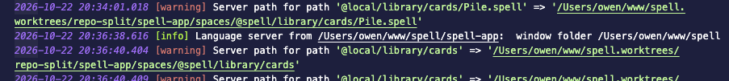

Owen's test run, 2026-10-22 20:47: V2 failed.
Owen: from repo-split

From your screenshot: in ⎇ repo-split, the extension said
Language server from /Users/owen/www/spell/spell-app. That's the main checkout's, not the worktree's.
.git is a file, the main checkout's a folder.
window folder ..., a worktree.vscode test project, which checks both
folder orders, the main window, the setting and the fallback.
yarn ts and yarn lint are clean; its cli and vscode tests: 142 passed, 1
skipped.
main, not this fix's: the extension's own type check has 1 error in its runner panel,
from the spanish epic. I told spanish's session.
spell app vscode, once the fix is on main.